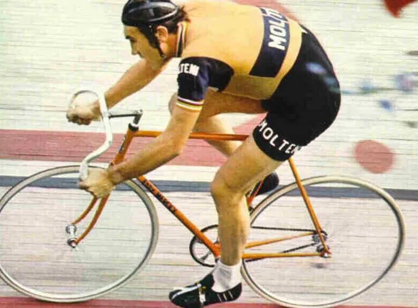
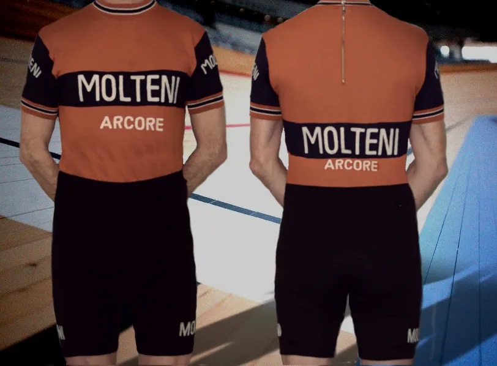

Optakt Record Della’Ora: Hvor langt? Hvilken rekord? Hvordan?

Om godt 2 uger kører Squadra Molteni timerekordforsøg. Og helt naturligt får vi en del spørgsmål angående rekordforsøget. Hvilken rekord? Hvor langt og hvordan? Vi skal herunder forsøge at svare på en del af dem.
Timerekorden
Når vi taler om timerekorden, så er det den klassiske timerekord vi taler om. Timerekorden som er kørt på stål, med egerhjul, almindeligt gedebukkestyr og i uldtøj. Den klassiske rekord indehaves selvfølgelig af Eddy Merckx, der i 1972 kørte 49.431 km.


12 år senere blev den slået af Moser med 51.151 km. Men da var cykeludviklingen allerede langt fra den klassiske cykel. Pladehjul, lycra og aerohjelm havde vundet indpas. Udviklingen fortsatte – det samme gjorde rekorddistancen, og toppede med Graeme Obree’s 52.713 km i 1994 og Chris Boardmans 56.375 km i 1996 – begge på et misfoster af en “cykel”.
UCI siger stop
Men i 1997 sagde UCI stop – og lavede reglerne om. De brugte Eddy Merckx’s rekord som udgangspunkt for de nye regler, der gik på, at der skulle bruges det samme udstyr som Merckx. Det vil sige, at enkeltstartscykler, aerohjelme, pladehjul, tri-bøjler og monocoque-stel blev forbudt.
I 2000 kørte Chris Boardman 49.441 efter de nye regler – og slog altså Merckx’s rekord med sølle 10 metrer. I 2005 kørte Ondrej Sosenka 49.700 km – men der er sået alvorlig tvivl om rekorden pga. doping. Både Boardman og Sosenka kørte modsat Merckx med lycra-fantomdragt og aerohjelm.
For det ikke skal være løgn, så ændrede UCI reglerne for timerekorden igen i 2014. Kort sagt genindførte man enkeltstartscykler, aerohjelme, pladehjul, tri-bøjler. UCI strøg Obree’s og Boardmans rekord fra listen – og satte Ondrej Sosenka’s 49.700 km som benchmark. Herefter startede Jens Voigt en ny æra for timerekorden. Voigt kørte 51.110 km samme år – og flere ryttere fulgte efter: Matthias Brändle, Rohan Dennis og Alex Dowsett nåede alle at sætte ny timerekord. Men 7. juni 2015 satte Sir Bradley Wiggins den nuværende timerekord ved at køre 54.526 km i Lee Valley VeloPark, London.
Høj, lav, lang, kort
Merckx’s timerekord blev kørt i over 2000 meters højde i Mexico City – og på en 330 meter cykelbane. Det samme gjorde Ole Ritter. De mange tidligere timerekorder blev også kørt på lange cykelbaner (300-400 meter) og i havniveau: Fra Ferdi Bracke’s 48.093 km på Olympic Velodrome, Rom i 1967 til Giuseppe Olmo 45.090 km i 1935 på Velodromo Vigorelli, Milano. I 1933 kører Maurice Richard 44.777 km – også på en lang cykelbane i Sint-Truiden, Belgien.
Vi skal tilbage til 1933 for at finde et rekordforsøg, der blev kørt på en kort bane. Jan van Hout kørte 44.588 km på en 200 meter cykelbane i Roermond, Holland.
Squadra Molteni og timerekorden
Vi kører på Odense Cykelbane (250 meter) og i havniveau. Selvfølgelig kan ingen af os komme i nærheden af timerekorden, hvis vi skulle køre den individuelt. Derfor har vi fra starten af vores timerekordprojekt hele tiden arbejdet med ideen om, at vi som hold skulle forsøge at slå rekorden. Men selv om vi kører som hold, er det en ekstrem svær opgave. Og hvordan den skal køres som hold, er også en stor udfordring.
Planen – og rytterne
At køre timerekorden som hold kan jo gøres på mange måder. Man kunne tænke sig en holdløbsformation på 8 ryttere. Eller den klassiske 4-mands formation. Eller måske forskellige par, der afløste hinanden.
Vi har valgt at køre timerekorden 7 mand. Men ikke i holdløbsformation. Derimod er vores plan, at hver rytter kører enkeltvis – og med flyvende skifte efter 750 meter (3 omgange).
Kaptajn Niels Bjørnsteen lægger ud med at køre de første 750 meter, hvorefter han slår op og bliver afløst af Max Nielsen. Efter Max kører Kristian Blume, der overlader til Løjtnant Kasper Sørensen. Kasper afløses af Jeppe Thiemer, der afløses af Jens Langergaard, der til sidst afløses af Svend Seegert. Herefter fortsætter Bjørnsteen … osv.

Hver rytter når ud på ca. 9 ture á 750 meter. Skiftet mellem kørende og afløsende rytter sker flyvende: Den kørende rytter afløses altså efter de 3 omgange af en rytter, der er oppe i fart. Ved selve skiftet slår den kørende rytter op – og den afløsende fortsætter ud på sine 3 omgange.
Hvor langt vi når ud på de 60 minutter – må timen vise…
Molteni-fantomdragt
Det er ikke kun de korte højintense ture, som vi har regnet på, for at holde farten så høj som muligt. Også uldtøjet har vi regnet på. Vi har derfor fået 7 specialfremstillede fantomdragter i den fineste marinould hjem fra Tre Emme i Italien. Dragten sidder stramt og er varm. Dette er naturligvis for på en og samme tid, at opnå aerodynamik og kunne køre i varm luft, hvilke jo har en lavere luftmodtand end kold luft…


Squadra Molteni timerekordforsøg køres 9. februar kl. 14.00 på Odense Cykelbane.